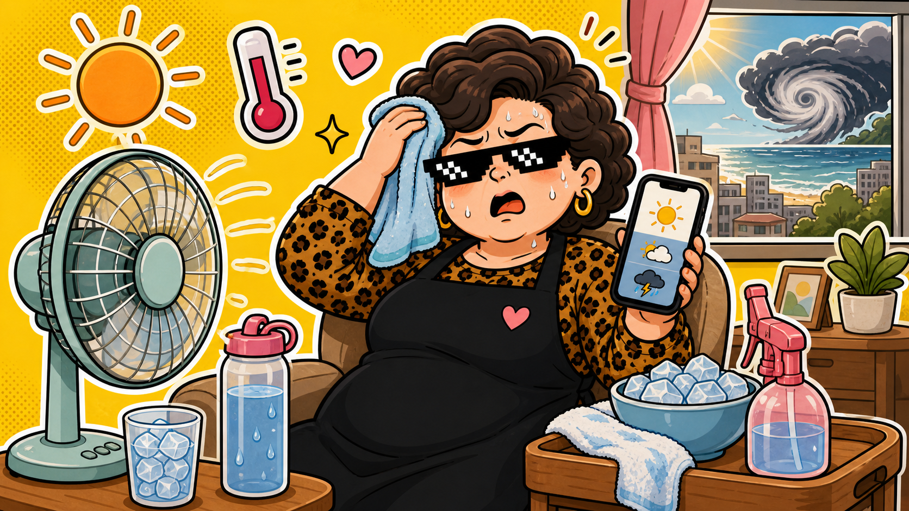

天氣新聞 · 2026/05/27
先熱再變天：白天像烤箱，週末前記得看鋒面臉色。
中央社整理，台南 5 月 26 日最高溫衝到 39.5 度，27 到 28 日全台仍偏熱，29 日起鋒面接近，降雨機率提高。阿姨翻譯：今天先防中暑，包包裡的傘也先別退休。
上圖為 AI 生成情境圖，不是新聞照片。
阿姨一句話：現在不是單選題，是「防曬＋補水＋看雨」三題一起寫。
最近的天氣很會玩人。白天熱得像在路上烤人，晚上又開始有人問週末會不會下雨。中央社引述氣象資訊指出，27 到 28 日仍受高溫影響，29 日起鋒面南下，北部與東北部轉為有短暫陣雨的機率較高。
這種天氣最容易踩的坑，是只記得其中一半。只帶水不帶傘，下午被淋；只帶傘不補水，中午先暈。阿姨不求你變氣象主播，只求你出門前願意多看一眼預報。
阿姨今天怎麼準備
- 中午外出：補水、防曬、淺色衣服先上，不要跟太陽硬碰硬。
- 通勤包：雨傘先放著，這兩天別因為早上太晴就把它踢出門外。
- 週末安排：戶外行程先留備案，29 日後再看鋒面實際走法。
為什麼普通人會點這題
因為這不是遠方的颱風圖，而是你今天會不會在捷運站口熱到發脾氣、晚上會不會洗好衣服結果又遇到陣雨。阿姨的生活雷達，只挑這種會直接碰到你的事。
來源：
中央社 高溫與鋒面報導、
中央氣象署